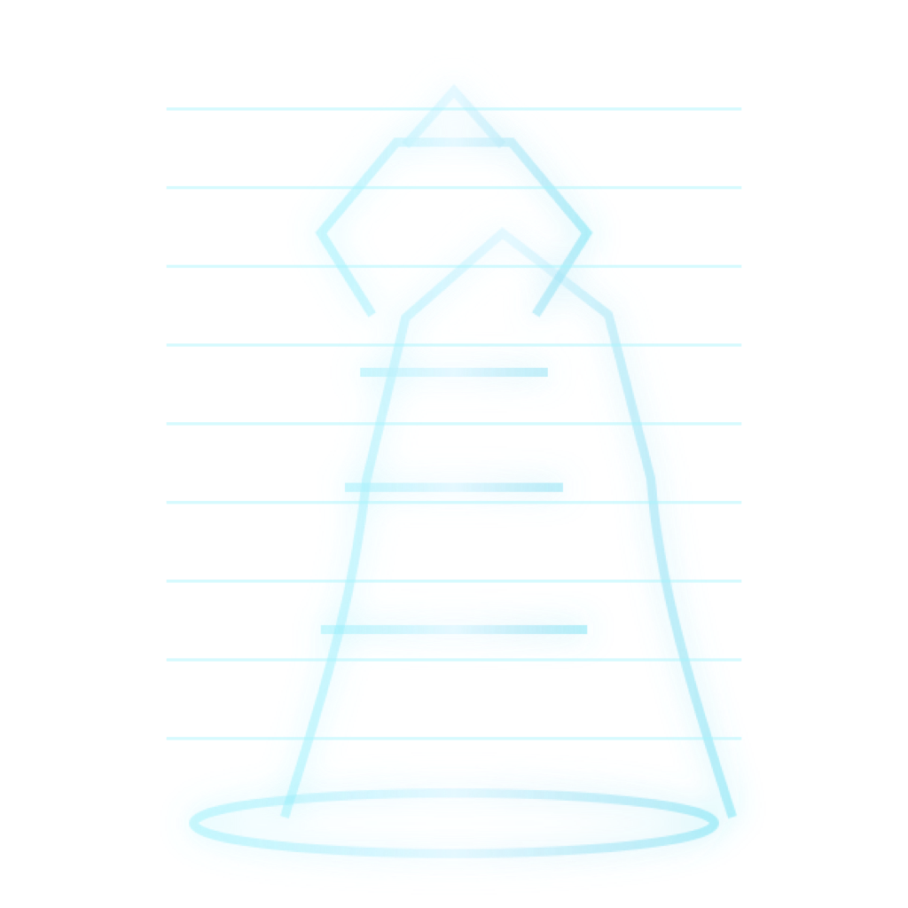

Native local streaming is on. Use /agent your objective for approved tool selection. ⌘/Ctrl+Enter sends; ⌘/Ctrl+L focuses the command box.
Prompts are sent exactly as shown. These controls are recorded with every job.
Create a fine-grained token with “Make calls to Inference Providers,” paste it here once, and it will be stored with macOS encrypted storage.
Loading worker evidence…
Runs read-only checks across local AI, private search, Windows media, capacity, models, storage, and offline voice. No prompts or credentials are transmitted.
Run the full check for a weighted readiness gate and repair guidance.
Actions use the verified SSH channel and fixed PowerShell commands. Active queue work blocks restart and gaming handoff.
Reminders and local runtime monitors survive restarts. No prompt or personal data is sent to a cloud AI provider.
Quiet while unchanged. A notification appears only after the first check when availability or the health label changes.
Shows what the context assembler included. It never reveals stored credentials or hidden model reasoning.
Nothing is saved here automatically. Pressing a save button explicitly approves that text for future local context.
These settings are local to this Mac and do not affect prompts or generated artifacts.
Drop PNG, JPEG, or WebP files. Promote, reject, annotate, branch, and select two or four views to compare.
Checking live identity, pose, and structure-control capabilities…
Choose one move at a time. The studio keeps character locks separate from what you want to change, and shows the exact editable fields before anything is queued.
Start with identity and costume in Continuity locks. Change environment, pose, camera, or lighting in its own field so revisions stay controlled.
Seed repeats a composition. Steps trade time for refinement. CFG controls prompt pressure. Batch 4 creates a four-up exploration in one queued job.